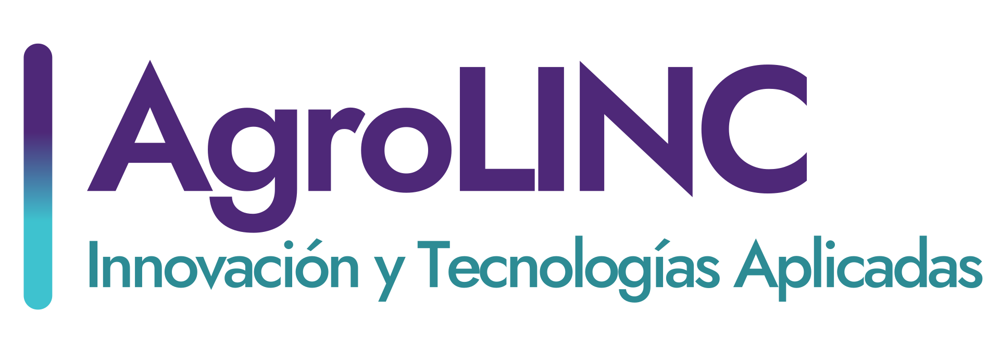
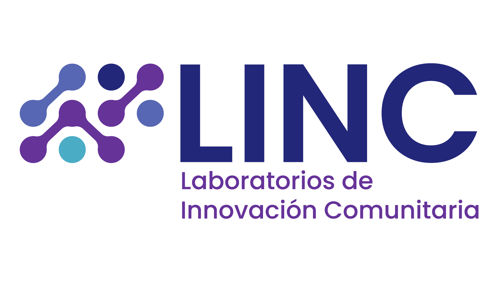

Explora prototipos agrícolas, modelos para impresión 3D, recursos abiertos, espacios maker y soluciones desarrolladas desde AgroLINC.
Recursos abiertos y soluciones agroalimentarias.
Modelos abiertos para impresión 3D.
Selecciona un punto en el mapa para ver la información detallada aquí.